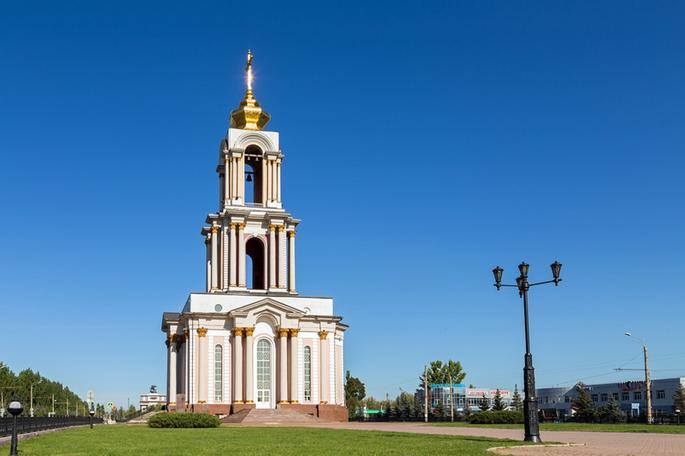

Здравствуйте. Сегодня я хочу рассказать вам о четырёх мемориалах битв на Курской дуге(они обозначены на карте)
Первый находится в Белгородской области, п. Яковлево и включает в себя несколько памятных мест. Самое важное — это, конечно, вечный огонь. Вечный огонь — это символ памяти и боевой славы воинов Красной Армии, живых и мертвых, известных и безымянных. По обе стороны от Вечного огня установлены 18 чугунных плит, на которых нет ни имен, ни фамилий. Это дань памяти неизвестным солдатам, павшим на поля сражений Курской битвы. 4 августа 1973 г., в день торжественного открытия Мемориала, он был зажжен в память о воинах — героях Курской битвы. Вечный огонь был доставлен на Мемориал с Мамаева кургана на бронетранспортере вместе со священной землей города – героя Волгограда нашим земляком Героем Советского Союза, бывшим летчиком Н. Н. Кононенко, вручен первому секретарю Белгородского обкома КПСС М. П. Трунову, который и зажег его.
Хутор Крапивенские Дворы. На этих рубежах тысячи наших воинов отдали свою жизнь, отстаивая честь, свободу и независимость нашей Родины. Скорбные ряды надгробий из черного гранита. Большинство могил братские. Здесь захоронено более 1200 солдат и офицеров.
В центре кладбища на высоком постаменте — фигура советского воина в плащ-накидке и каске. В поднятой правой руке он сжимает автомат, отдавая салют павшим товарищам, а в другой – скорбно склоненное знамя. На надгробных плитах и пятнадцати досках высечены имена героев битвы. На пьедестале высечены слова: «Слава героям, павшим в боях за свободу и независимость нашей Родины». У подножия пьедестала установлены мраморные плиты, на которых высечены имена погибших воинов. Здесь похоронено много и неизвестных солдат. В рядах братских захоронений — сыновья и дочери всех народов нашей страны, кто до последнего патрона, до последнего удара сердца мужественно сражался с врагом. В основном, это воины 52-й гвардейской и 375-й стрелковых дивизий и частей усиления, принимавших участие в ожесточенном оборонительном сражении.
В поселке Яковлево, вдоль автомагистрали Москва – Крым, там, где от нее ответвляется шоссе на Прохоровку, на просторной заасфальтированной площадке установлен памятник гвардейцам-минометчикам (архитектор А.Т. Божко). Невысокий постамент, на нем прославленный гвардейский миномет БМ-13, установленный к 30-летию Победы над фашистской Германией. На Обоянском направлении, где противник наносил главный удар на Курск, героически сражались воины легендарных «Катюш», приводивших в ужас немецко-фашистских захватчиков
В 1973 г. на площадке в селе Шопино, на месте 1-ой полосы обороны воинов Красной Армии, установлен памятный знак. К его основанию из розового гранита прикреплена металлическая стела с изображением воина-гвардейца, с автоматом в руках, дающего клятву на верность Родине. Рядом с изображением металлическая табличка с текстом «На этих рубежах 5 июля 1943 года началась битва на южном выступе Курской Дуги». Авторы: Дмитрий Федорович Горин, архитектор-художник Анатолий Иванович Гребенюк. Летом 1943 г. здесь с запада на восток проходила линия фронта. На этих рубежах мужественно сражались воины 6-й гвардейской армии. От Березово до Беломестной оборону занимала 375-я стрелковая дивизия (командир – полковник П. Д. Говоруненко), а участок по обе стороны магистрали оборонял 1243-й стрелковый полк (командир – полковник В. М. Фролов). Дивизия была сформирована в августе 1941 г. в Свердловске из уральцев и сибиряков.
Более подробную информацию вы можете прочитать на сайте: мемориал.бгикм.рф
Второй музей имеет своё название: «Третье ратное поле России» . Попадая на территорию музейного комплекса психологически перестраиваешься, потому что сразу же поподаешь в атмосферу величия подвига и благодарной памяти потомков. В центре предмузейной площади величественная скульптурно-художественная композиция «Танковое сражение под Прохоровкой. Таран». Это композиция – символ, олицетворяющая героизм советских воинов. Это — Прохоровское сражение в миниатюре, тем не менее в полной мере передающее накал сражения
За зданием музея – тоже всё необычно. Здесь представлен фрагмент советских и немецких оборонительных укреплений, состоящих из траншей, окопов, ходов сообщений площадками под орудия и укрытием для танков. В систему окопов вписан блиндаж.
Этот музей — музей нового поколения единственный в России в своем роде. Он рассчитан как на одиночного посетителя, так и на приём большого количества экскурсантов. Он состоит из 5 залов.
На северном выезде из Курска на бульваре протяженностью 600 метров располагается мемориал, посвященный одному из решающих сражений Великой Отечественной войны. Комплекс построили в 1998 году к 55-летию победы советских войск в битве на Курской дуге. (отмечен цифрой 4 на карте). В мемориальный комплекс входят Триумфальная арка, храм Георгия Победоносца, памятник Георгию Жукову, братская могила и Аллея военной техники.
Триумфальную арку высотой 24 метра возвели в 2000 году. Арку венчает скульптура Георгия Победоносца, который поражает копьем змея. По четырем сторонам у подножия монумента располагаются скульптуры русских воинов разных эпох. На стенах арки — тексты о русском военном духе.
В мемориальном комплексе находится один из немногих памятников четырежды Герою Советского Союза Георгию Жукову. Бронзовую скульптуру военачальника лепили по оригинальным снимкам из личного архива семьи Жукова.

Храм Святого Великомученика Георгия Победоносца построили по проекту курских архитекторов Валерия Михайлова и Павла Пахомова в 2008 году. Высота кирпичного трехъярусного храма — 47 метров. Церковь венчает золоченый купол, на звоннице установлены девять бронзовых колоколов. Внутри храма располагаются около семи тысяч мраморных табличек с именами погибших на Курской дуге русских воинов.
Комплекс «Курская дуга» знакомит с образцами военной техники 1941–1945 годов. Здесь представлены легендарные «Катюша», танк Т-34, а также ствольная артиллерия и самоходная артиллерийская установка.
В августе 1987 года в городе Курске на пересечении улицы Дзержинского и улицы Энгельса был презентован незабываемый знак «Танкистам-героям Курской битвы», посвященный событиям, произошедшим на Курской Дуге в 1943 году(обозначен цифрой 3 на карте). На высочайшем гранитном постаменте, символизирующем развернутое военное знамя, установлен танк ИС-3. В передней доли постамента, у его подножия, выполненного как железобетонная надолба, сокрушаемая суровой военной машиной, большое число – дата Курской битвы. Автор памятного знака – курский конструктор и живописец В.П. Семенихин. Памятный символ является одним из самых огромных и узнаваемых в Курске. О нем знают не только в городе, но и большая часть курян – жителей области, для многих все маршруты в городке начинаются конкретно от памятника. С этим танком даже связаны две городские легенды. По одной из них, этот танк был использован в сражениях Курской битвы, что невозможно, так как танки ИС-3 были запущены в серийное создание в конце Великой отечественной войны, и не то что в Курской битве, а в принципе в борьбе поучаствовать не успели. По другой легенде, этот танк собственным ходом заехал на постамент.
Здравствуйте. В этом году я планировал участвовать в конкурсе «Ученик года» и мне было необходимо сделать лэпбук «Семейные хроники войны», который состоял из буклетов о моих родственниках, участвовавших в Великой Отечественной войне. Так как этот сайт посвящён Дню Великой Победы, я решил выложить их сюда.
{kind=link}